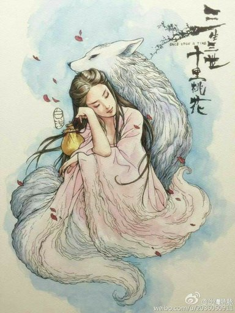

Лисица с девятью хвостами
Знакомство с кумихо
Термин кумихо дословно переводится с корейского как «лисица с девятью хвостами», где ку – «девять», ми – «хвост», а хо – «лиса». По старинной легенде, прожив тысячу лет, лисица отращивает девять хвостов и обретает возможность перевоплощаться в любое существо, предмет или человека. Кумихо способную превращаться в женщину или мужчину-оборотня. Легенды о таком существе имели распространение во многих регионах Восточной Азии.
В легендах кумихо почти всегда выступают в отрицательной роли. Это коварные обольстительницы, нечисть, обязанная питаться человеческими сердцами или печенью. Помимо убийств, Кумихо часто отводится роль пожирательницы сердец мёртвых, бродящей по ночам по кладбищам.
Однако самые древние сохранившиеся тексты рассказывают истории о наивных и добрых кумихо, которые помогают людям и
зачастую становятся жертвами их обмана.
Некоторые легенды описывают обстоятельства, при которых кумихо может вознестись над своим статусом нечисти и навсегда стать человеком.
Условия превращения кумихо в человека
Согласно легендам, Кумихо может превратиться в человека, если будет выполнено хотя бы одно из трёх условий:
- Кумихо будет воздерживаться от поедания трупов и убийств людей в течение тысячи дней.
- Человек, узнавший Кумихо, когд он будет в человеческом облике, сохранит эту тайну в течение десяти лет.
- Либо кумихо съест печени тысячи человек в течение тысячи лет.
В облике человека кумихо всегда можно распознать, но вряд ли с первого взгляда. Оборотня может выдать хвост, скрываемый под одеждой или необычные для человека черты лица. Иногда лиса не контролирует своё превращение. Кумихо тщательно охраняют тайну свой личности, не позволяя никому из людей узнать, что они на самом деле лисы.
Легенды о кумихо
Сказание «Превращение кумихо»
В сказании «Превращение кумихо» лиса появляется на свадьбе под видом невесты. Даже мать невесты не распознаёт подмены. Истина открывается, когда с кумихо снимают одежду.
Сказание «Как девушка распознала кумихо с помощью китайского стихотворения»
В сказании «Как девушка распознала кумихо с помощью китайского стихотворения» кумихо обратилась прекрасным юношей и попыталась добиться руки героини, но лису по запаху узнали охотничьи собаки.
Cказка «Сестра-лисица»
В сказке мужчина просил о дочери, хоть даже лисице, и вскоре его жена родила дочку. Когда старшие сыновья открыли, что она кумихо, отец выгнал их. Вернувшись после странствия, они обнаружили сестру живущей дома в одиночестве. Только один из братьев спасся после ночи, проведённой в родном доме.
Бусина Кумихо (Лисья бусина)
Лисья бусина, это что-то вроде души у человека, именно в ней находится сила кумихо. Находясь без неё долгое время, кумихо ослабевает. Начинает панически бояться большой воды и бесконтрольно превращается обратно в лису со светящимися синими глазами. Так же близ водоемов теряет нюх, и соответственно свою уверенность.
При желании, Кумихо может превратиться в человека, если найдет того, кто в течении 100 дней будет хранить её бусинуи её секрет, а так же добровольно отдаст душу.
Образ кумихо в современной Корее
Кумихо популярны в современной корейской культуре. Они занимают место романтизированной нечисти, сходное с вампирами с Запада.
Образ кумихо, транслируемый в современной культуре Кореи, разительно отличается от традиционного. С популяризацией корейской культуры в мире, с распространением «корейской волны» трактовка этого персонажа стала стремительно меняться. Термин «корейская волна» был придуман во второй половине 1990-х годов китайскими журналистами в связи с быстрым распространением поп-культуры Южной Кореи за рубежом. В настоящее время он также отражает целое направление во внешней политике Республики Корея, которое заключается в повышении интереса иностранцев к этой стране с помощью популяризации продуктов массовой культуры, прежде всего, музыки и кинематографа. Таким образом, вполне объяснимо, что позитивизация образа лисы кумихо помогла привлечь интерес зрителей не только к современной, но и к традиционной культуре Кореи.
Несмотря на то, что в настоящее время довольно трудно определить истинные причины изменений в изображении девятихвостой лисы и в отношении к ней в Корее, имеющаяся тенденция уже говорит о том, что этот фольклорный персонаж не только сохраняет свою актуальность, но и, трансформируясь под запросы современного общества, становится полноправным элементом современной культуры.
Заключение
Большинство корейских мифов повествуют не о богах, а объясняют, например, происхождение мира, природные и социальные явления и тому подобное. Часто корейские мифы являются узко локализованными и касаются только конкретных поселений или родов.
Интересной страницей мифологии являются корейские драконы. Мифы полны упоминаний о драконах, гигантских змеях и злобных демонах, которые в большом количестве «выходили из-под земли», но об этом мы поговорим в следующей статье.
Вернуться к началу ^